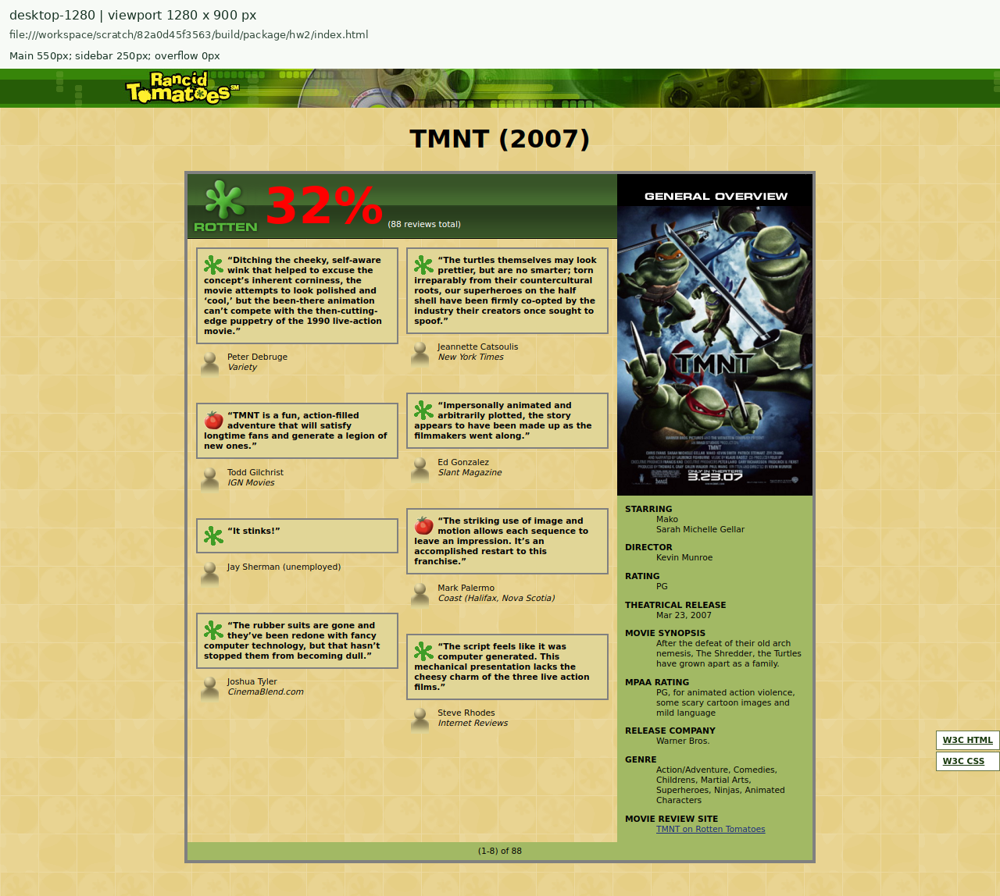
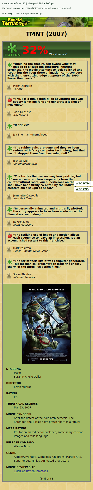
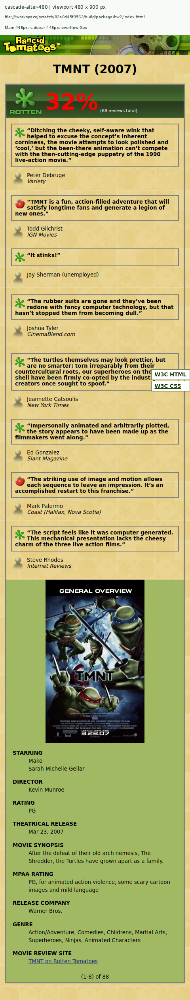
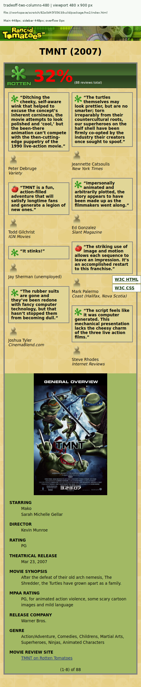
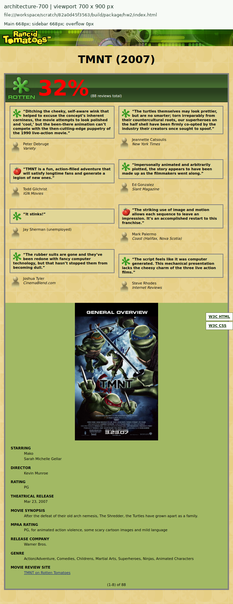
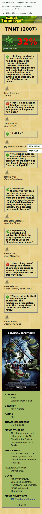
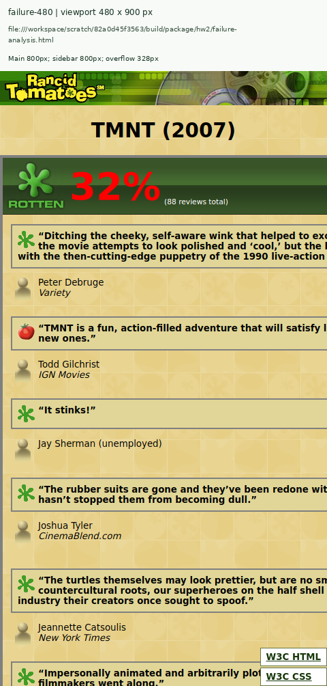
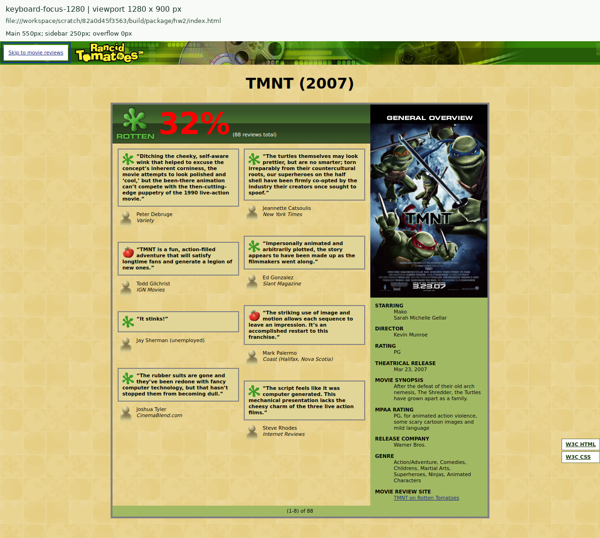
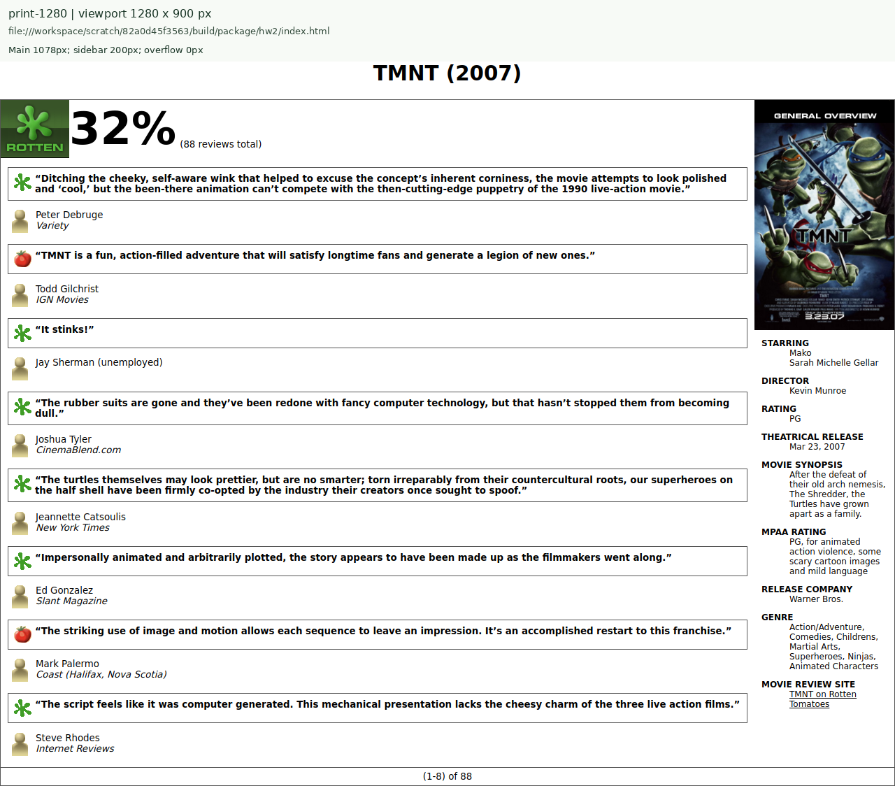

HOMEWORK 2 / LAYOUT LAB
My Movie Review: evidence and analysis
Nirupamarayudu Chitturi · Panther ID: 002931435
Web Programming · Graduate track · Fall 2026
Open the submitted movie page · Student homepage
Capture method
All movie-page screenshots use Google Chrome for Testing 134.0.6998.35. The viewport is exactly the stated CSS-pixel width, with a height of 900px and device scale factor 1. Screenshots are automated browser captures. The labels above each image were added after capture; they show the actual local document URI and measurements from getComputedStyle and getBoundingClientRect. The labels do not alter the page layout. These are computed-style measurements, rather than screenshots of the DevTools Computed panel.
Original images and template appearance were obtained from the matching Web Programming Step by Step exercise because the instructor resource server returned HTTP 502. All nine required assets are local. This record covers local implementation and testing; it does not claim a Codd upload, GitHub publication, or iCollege submission.
Desktop reference reconstruction

The frame occupies 808px including its two 4px borders. It is horizontally centered. The rating uses the supplied 83px image strip; reviews use the supplied yellow background and icons; the overview uses #A2B964. The counter spans both Grid columns. At desktop widths the page retains the required 8pt body font and 24pt title.
01 · Cascade investigation
At 480px, the initial first review box computes to rgb(225, 214, 151). Removing only background-color from the .review-quote rule changes it to rgba(0, 0, 0, 0). Background color is not inherited. No other matching rule sets that paragraph’s background, so its initial value is transparent. The body’s tiled background becomes visible through the review and its transparent ancestors.
.review-quote {
padding: 8px;
border: 2px solid gray;
background-color: #e1d697;
font-weight: bold;
overflow-wrap: anywhere;
}
/* After removing only background-color, the visible painting comes from: */
body {
background: #efe0a2 url("images/background.png");
}
.review-quote has specificity (0,1,0), while body has (0,0,1). They style different elements, so the body declaration does not win a cascade contest on the paragraph. Source order cannot supply a missing matching declaration here. The background-color declaration was restored in the submitted styles.css; the after-state exists only in the capture session.




02 · Responsive trade-off
At exactly 480px, both the main review region and overview compute to 448px. The bordered frame measures 456px; its remaining 24px become two 12px outer margins. documentElement.scrollWidth and innerWidth both equal 480, so measured horizontal overflow is 0px.
The deliberate trade-off is to use one review column and a 10pt body font on a phone. The controlled comparison changes only grid-template-columns back to two equal tracks. Both versions avoid overflow, but the first quote shrinks from 424.00px to 207.77px, and critic metadata wraps. The final single column preserves reading width and keeps each icon beside the reviewer’s text.
@media (max-width: 480px) {
.reviews {
grid-template-columns: minmax(0, 1fr);
gap: 0;
padding: 0 12px;
}
}
/* Single changed value during comparison: */
/* grid-template-columns: minmax(0, 1fr) minmax(0, 1fr); */



03 · Architecture defense
Grid expresses the two-dimensional relationship among the review region, overview, and full-width counter. Named areas let the same DOM order become a single stacked track at 700px. Flexbox expresses the one-dimensional relationship between each critic icon and its name/publication. The icon stays 35px wide, the text flexes, and gap provides the 5px separation without spacer elements.
| Viewport (px) | Main (px) | Overview (px) | Overflow (px) |
|---|---|---|---|
| 1280 | 550 | 250 | 0 |
| 700 | 668 | 668 | 0 |
| 480 | 448 | 448 | 0 |
| 280 | 248 | 248 | 0 |
.movie-frame {
display: grid;
grid-template-columns: minmax(0, 1fr) 250px;
grid-template-areas: "reviews overview" "counter counter";
}
.main-reviews { grid-area: reviews; }
.overview { grid-area: overview; }
.review-count { grid-area: counter; }
.review-meta {
display: flex;
flex-wrap: wrap;
align-items: flex-start;
gap: 5px;
}
.review-meta img { flex: 0 0 35px; }
.review-meta span { flex: 1 1 210px; min-width: 0; }
@media (max-width: 700px) {
.movie-frame {
grid-template-columns: minmax(0, 1fr);
grid-template-areas: "reviews" "overview" "counter";
}
}


The first icon and author share the same top coordinate at 700px and 480px. At 280px, the metadata item has less than the 250px needed for the 35px icon, 5px gap, and 210px text basis; flex-wrap moves the name to the next line. Document overflow remains 0px. The fallback uses floats only inside @supports not (display: grid); the mobile rules clear those floats and reset the region widths to auto.

04 · Controlled failure and diagnosis
The defect is isolated in failure-analysis.html and failure-analysis.css. The original index.html remains responsive. The defect’s later media rule forces the frame to retain an 800px minimum width even at 480px. The document becomes 808px wide, causing 328px horizontal overflow. The viewport capture shows review content cut off on the right.
/* failure-analysis.css, loaded after the screen and print stylesheets */
@media (max-width: 700px) {
.movie-frame {
min-width: 800px;
}
}
The winning defect selector has specificity (0,1,0), and its minimum size prevents the intended maximum size from shrinking the frame. CSS resolves a minimum greater than the available maximum by honoring the minimum. The corrected page omits the defect stylesheet and uses the original 800px width with max-width: calc(100% - 32px). Its main and sidebar return to 448px and its document width returns to 480px. Both original defect evidence and corrected evidence are preserved.



Keyboard accessibility and print audit
The first Tab focuses the skip link, makes it visible at top: 8px, and shows a 3px blue outline. Enter moves focus to movie-content. The next Tab reaches the TMNT review-site link with the same visible outline; validator links follow in DOM order. Images have text alternatives, and labeled regions have matching landmark roles. No positive tabindex or keyboard trap is used.

print.css hides the image banner, skip link, and fixed validator controls. The browser confirms display: none for those controls and background-image: none for the body. The print layout uses an automatic-width frame, a 200px overview, black text, single-column reviews, and break-inside: avoid on each review. The following capture uses print media; it verifies styling, not printer-specific pagination.

Validation record
The local Nu HTML Checker, version 26.10.2 (1815ff1), reports zero HTML errors for the homepage, movie page, and defect copy. CSSTree 3.2.1 reports zero CSS parse or property/value errors for the screen, print, defect, and homepage styles. Browser captures report no page-script errors and every page image loads. The document uses the HTML5 doctype with XHTML-style lowercase, quoted attributes, and closed empty elements, following the brief’s final HTML5 submission requirement.
Online W3C validation was blocked by automatic approval review because uploading the project source would disclose content externally. No online W3C pass is claimed. The local Nu checker is the standalone HTML conformance checker; CSS checks here use CSSTree and are not a W3C CSS certificate.
java -jar vnu.jar --errors-only --format json index.html hw2/index.html \
hw2/failure-analysis.html
Result: {"version":"26.10.2 (1815ff1)","messages":[]}
CSS parser and property-value validation: CSSTree 3.2.1
styles.css: 139 declarations, 0 errors
print.css: 32 declarations, 0 errors
failure-analysis.css: 1 declaration, 0 errors
homepage.css: 29 declarations, 0 errors
HTML validation output · CSS validation output · Complete browser measurements
Two-minute architecture explanation
The desktop movie page has two main regions: the critic reviews and the overview. The inner frame is 800 pixels wide, split into 550 pixels for reviews and 250 pixels for the overview. Grid is useful here because it controls both the columns and the counter row. The areas are named reviews, overview, and counter, so the mobile version can rearrange the regions without duplicating content.
At 700 pixels, the overview moves below the reviews. Both regions measure 668 pixels, and the page has no horizontal overflow. At 480 pixels, the reviews also become one column and the font increases to 10 points. Both major regions measure 448 pixels. I compared this with two review columns at the same width. The narrow columns still fit, but make each review harder to read and cause the critic information to wrap, so the single column is the better final choice.
Flexbox is used for each critic’s icon and text because that is a one-dimensional alignment problem. The icon has a fixed width, the text grows, and the five-pixel gap handles spacing. The small-width capture shows that wrapping works without creating a scrollbar.
The failure copy demonstrates why a fixed minimum width is dangerous. Forcing the frame to stay at 800 pixels on a 480-pixel viewport produces 328 pixels of overflow and cuts off the review on the right. The original page corrects this by allowing the frame to shrink. The keyboard audit also confirms a visible skip link and focus outline, while the print stylesheet removes fixed controls and image backgrounds.